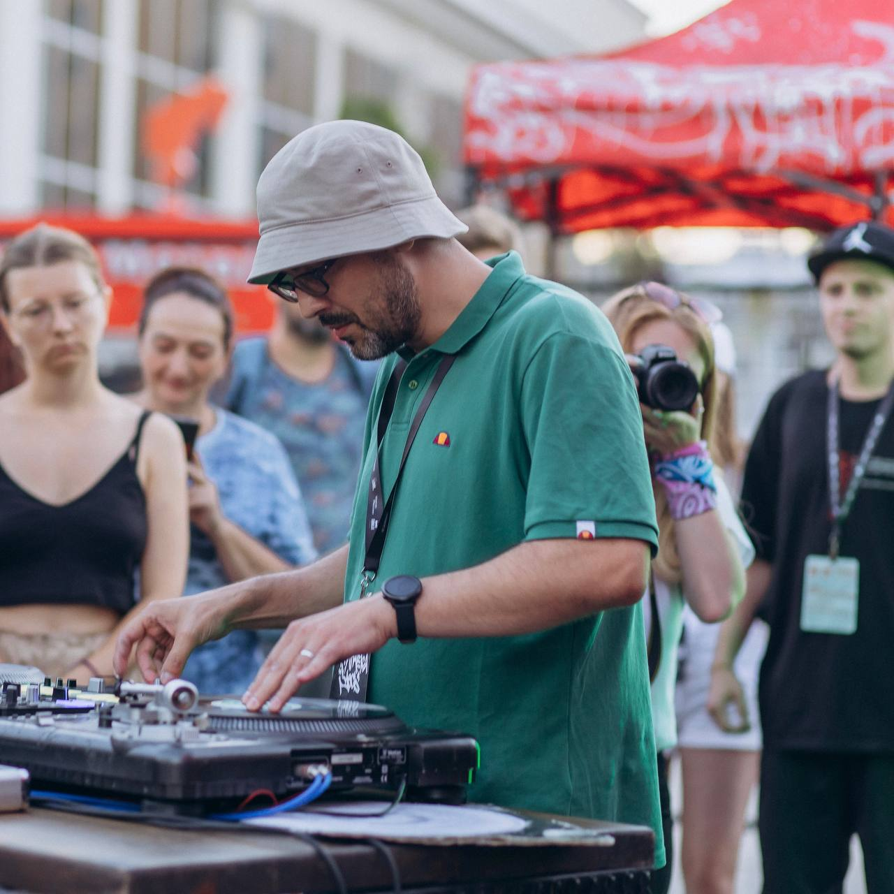
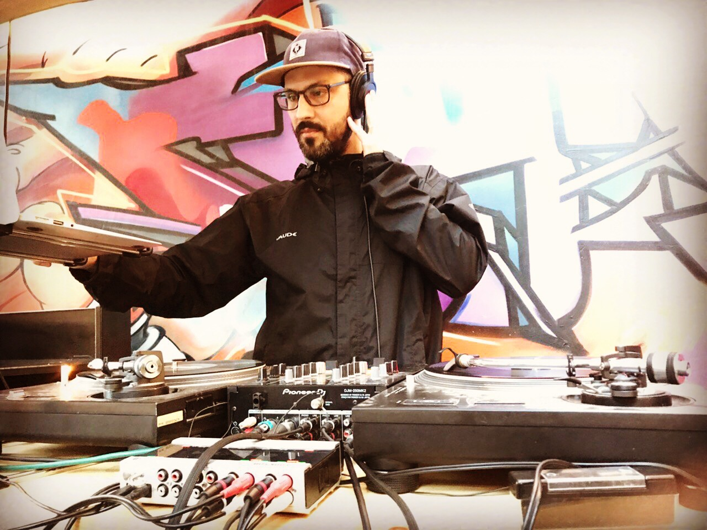
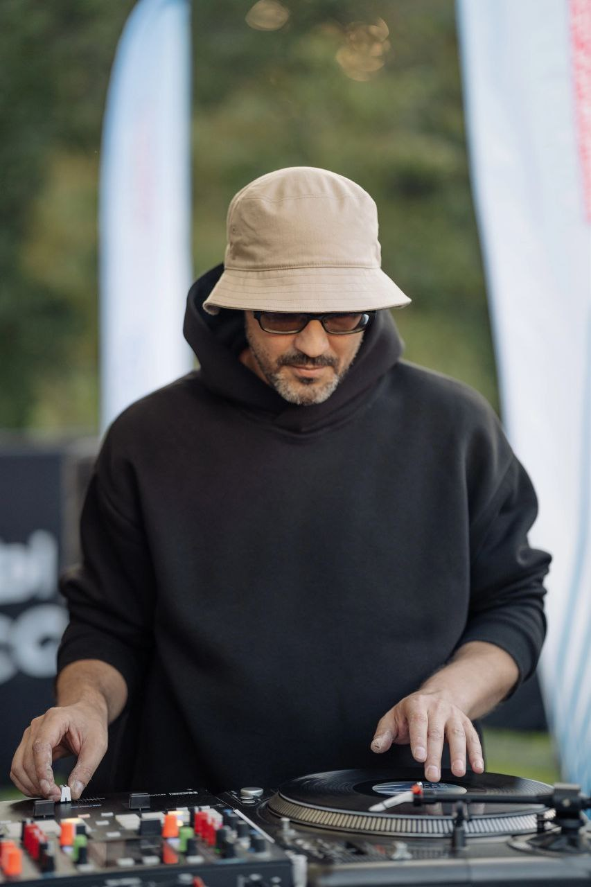
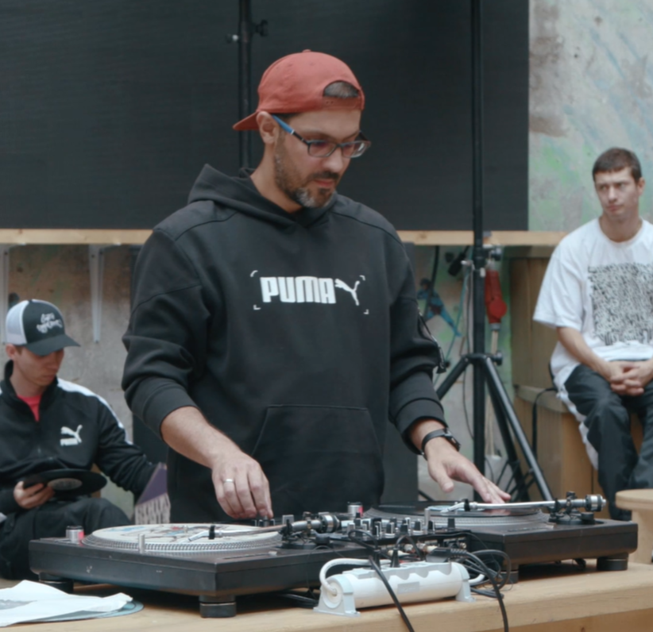
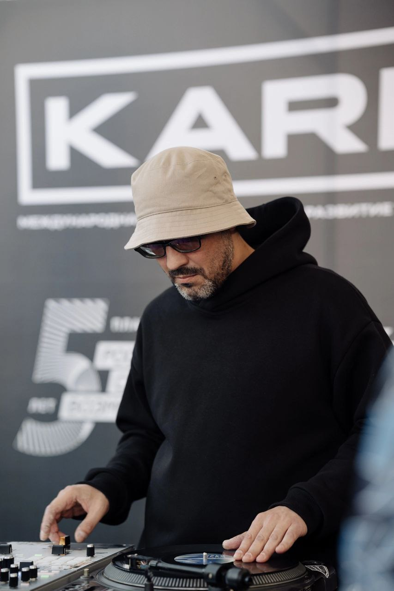
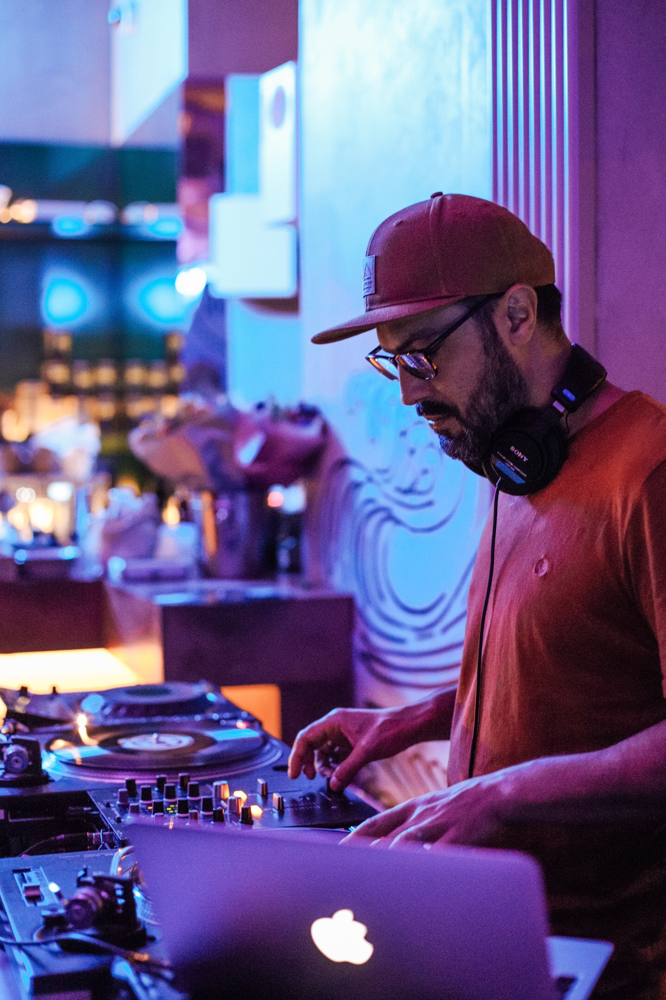
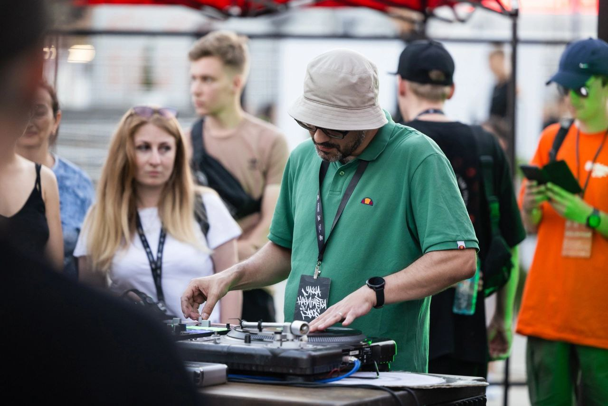
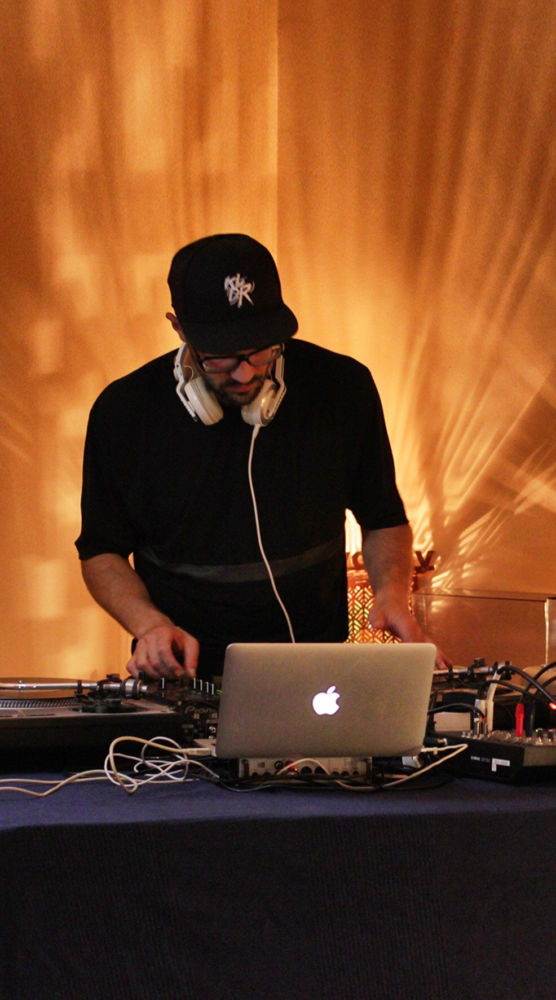
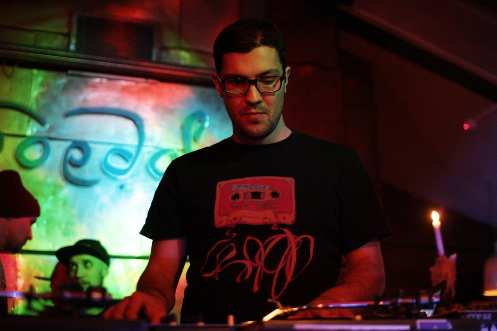

Музыкальный отбор, построение сета, чувство темпа и работа с аудиторией. Учимся слышать логику треков и уверенно вести историю от первого до последнего.
Санкт-Петербург
Индивидуальное обучение диджеингу
Для тех, кто хочет уверенно миксовать любимую музыку или полностью погрузиться в мастерство тёрнтейблизма. Скретч, битджагглинг и миксинг с DJ Nizami — от первых движений на вертушках до своей уверенной рутины.










Занятие строится вокруг вашей музыки и вашей цели
Можно начать без опыта, подготовиться к первому сету, разобраться со своим контроллером или развить технику на вертушках. Авторская практика DJ Nizami строится вокруг тёрнтейблизма, hip-hop и funk, но в обучении можно работать с любым жанром. Первое занятие строится от вашего уровня: если вы впервые видите оборудование, знакомимся с ним и разбираем основные органы управления. Если опыт уже есть, сразу работаем с конкретной задачей, которую вы хотите решить.
Каждое занятие длится 1 час. После занятия можно продолжить общение в чате, обсудить любые вопросы по теме, а при необходимости созвониться по видеосвязи.
Кому подойдёт
Своя точка входа в DJ-практику
- Начинающим без опыта
- Тем, кто уже играет дома
- Музыкантам и продюсерам
- Перед первым выступлением
- Диджеям, развивающим технику
Направления
Техника, которую видно и слышно
Подход, в котором проигрыватели и микшер становятся инструментом живого исполнения. Работа с пластинкой, фейдером, ритмом и собственным почерком.
Управление звуком движением пластинки и кроссфейдера: от чистой базы до выразительных комбинаций, которые органично звучат в музыке.
Сборка нового ритма из двух копий записи. Лупы, акценты, перестановка фраз и чувство рисунка, который можно сыграть руками.
Точные и музыкальные переходы между треками: синхронизация, фразировка, эквализация и динамика сета.
Домашняя студия
Оборудование для настоящей практики
Занятия проходят на профессиональном оборудовании, доступном для практики. Можно работать и на своей технике.
DVS: Traktor, Serato или система на оборудовании ученика. Можно принести MIDI-контроллер, проигрыватели и другие устройства. Также помогу с подбором оборудования и разбором актуальных предложений на рынке.
О преподавателе
DJ Nizami
Петербургский диджей, тёрнтейблист и музыкант. Участник многочисленных фестивалей и диджейских батлов: «Кардо», V1 Festival и других. Организатор V1 Scratch Jams.
Работал с L-Brus, Измы, MojoHead, Зелёным Синдромом, Мантикором, группой «Дневной Свет» и другими представителями петербургской рэп-сцены.
Индивидуальные занятия
Выберите темп обучения
Разовое
3 000 ₽
Разбор задач, теория и практика.
Записаться10 занятий
24 000 ₽
2 400 ₽ за занятие.
Записаться20 занятий
39 000 ₽
1 950 ₽ за занятие.
Записаться30 занятий
45 000 ₽
1 500 ₽ за занятие.
ЗаписатьсяВ процессе обучения
Соберёте свой способ играть
- Увереннее работать с оборудованием
- Собирать и вести DJ-сет
- Понимать основы сведения
- Развивать скретч и собственные рутины
- Находить для себя новые подходы и приёмы
Вопросы
Частые вопросы
Подойдёт ли обучение без опыта?
Да. Первое занятие строится с учётом вашей стартовой точки.
Нужно ли своё оборудование?
Нет, в студии есть виниловые проигрыватели и микшеры. Но можно принести и свою технику.
Где проходят занятия?
Занятия проходят в Санкт-Петербурге. Детали согласуем перед записью.
Можно ли выбрать музыкальный стиль?
Да. Хотя авторская практика связана с hip-hop и funk, на занятиях можно работать с любым жанром.
Первый шаг
Начните с первого занятия
Напишите в Telegram или позвоните, чтобы обсудить формат занятия и вашу цель.